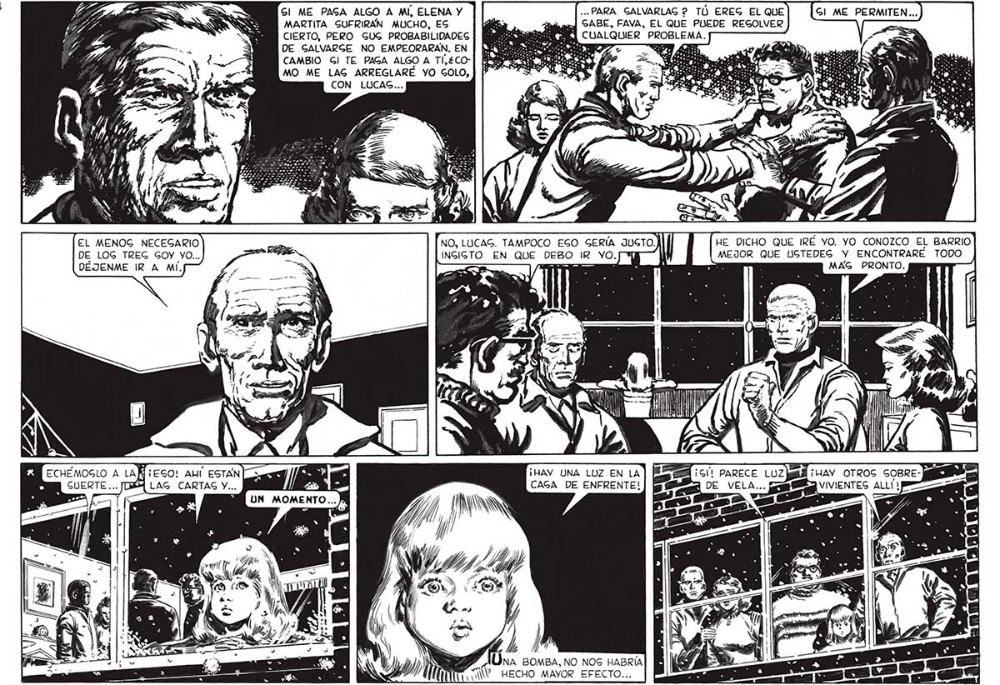

34 EL MENOG NECEGARIO DE LOG TREG GOY YO... DÉJENME IR A MÍ. Gl ME PAGA ALGO A MI, ELENA Y ... PARA GALVARLAG 2 TÚÓ EREG EL QUE MARTITA SUFRIRAN MUCHO, ES de de say] SABE, FAVA, EL QUE PUEDE REGOLVER CIERTO, PERO GUG PROBABILIDADES ALQUIER PROBLEMA. DE GALVARGE NO EMPEORARAN. EN | | NN. cg OS: CAMBIO Gl TE PAGA ALGO A TI,¿CO-| [948 AS Y 0 MO ME LAG ARREGLARÉ YO GOLO, | |? ” CON LUCAS... HE DICHO QUE IRÉ YO. YO CONOZCO EL BARRIO MEJOR QUE USTEDEG Y ENCONTRARE TODO MAG PRONTO. O IR yO.j Y Ami ¡ Tr Y f WA Ji Lu I ¡HAY UNA LOZ EN LA 5 ¡HAY OTROS SOBRE- II CAGA DE ENFRENTE! A VIVIENTES ALLÍ) > AY AÚna somsa, NO NOS HABRÍA AN. HECHO MAYOR EFECTO...
